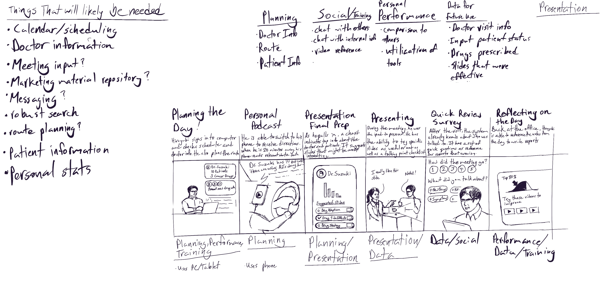

AstraZeneca's Tool Problem
(AstraZeneca K.K.)
Role: UX Designer in charge of leading research, development of a loan education tool
In a 3-month contract at AstraZeneca, I contributed to a design project focusing on optimizing tools for medical representatives interacting with oncology healthcare providers. Working alongside another designer and a customer experience manager, we researched and proposed solutions to enhance the effectiveness of these tools.
The medical representatives already had 16 tools, we didn't want to design a 17th.
Process
The other UX designer and I dove into the project on the kickoff workshop day, lacking the context of prior research. This limited our influence on the timeline and project requirements. Due to past info gaps, management insisted on 50 user interviews for robust insights. After negotiations, we settled on 20 interviews led by my manager and two ex-medical representatives. Unfortunately, our proposal for a concurrent survey to gather quantitative data was rejected by upper management.
Medical Representative Tasks
What we found was that medical representatives have four distinct times of day:
- Morning office time - time for checking their travel schedule, replying to emails, and confirming that days meetings
- Parking lot time - time for reviewing what was talked about at previous meetings and making sure all powerpoint slides are in order
- Meeting with healthcare providers - presenting new and existing drug options and working with doctors to meet the current needs of their cancer patients
- Evening office time - time spent entering data about the days meetings. Some is for personal use to improve their relationship with healthcare providers, others is largely for internal, strategic AstraZeneca use
Primary Persona: High-Tech Hiroyuki

Secondary Persona: Reliable Tool Reiko
First Design Thinking Workshop
A workshop was scheduled in the Osaka office to inform stakeholders about the research we had gathered and use that for going through a series of design thinking exercises that would determine a direction.
Off to Osaka!
5 Concepts to Rule Them All, Or Just Frankenstein Together
A Nautical Themed Retro to Keep Things Fun
Now It's Time To Start Storyboarding, Right?
So What Did We Make?

Conclusion
Our final design was well received. As our contract was coming to a close, I made sure to make my design accessible to the next contract designers who would be using it for usability testing and collaborating with developers to deliver it in the next 6 months.